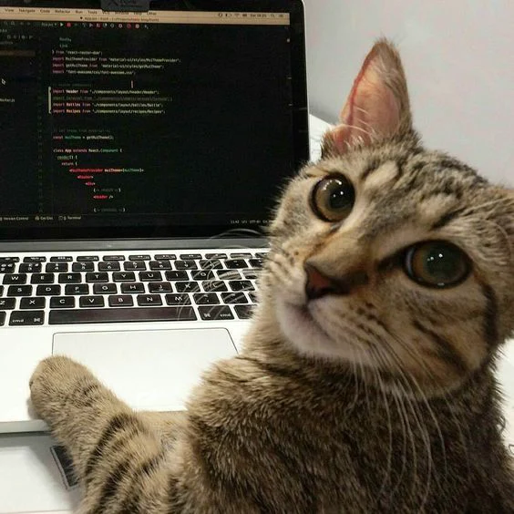

O TAC é o seu gerenciador de tarefas, atividades e compromissos que mantem qualquer um organizado, autonomo e rotineiro.
O TAC foi desenvolvido individualmente por Arthur Oliveira, um estudante do IFBA, Campus Santa ines a partir do segundo ano do ensino médio.
O TAC possue diversas ferraentas derivadas de acordo com suas necessidades.